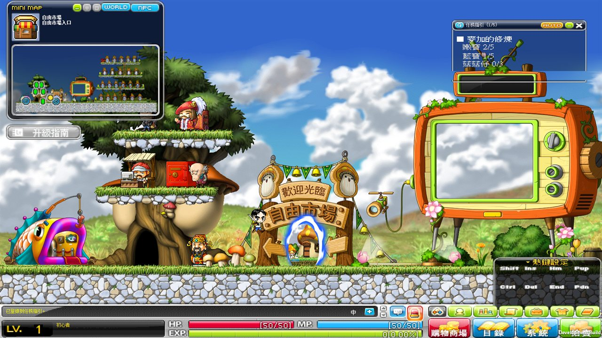
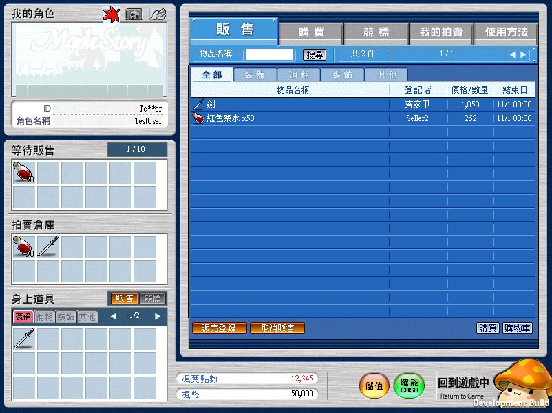
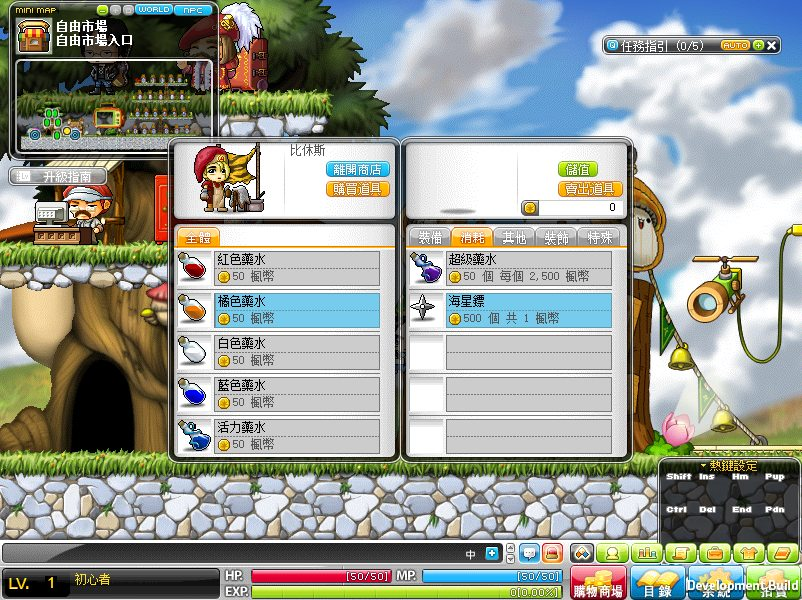
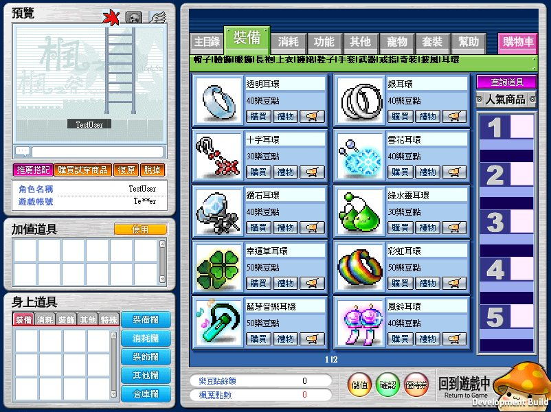
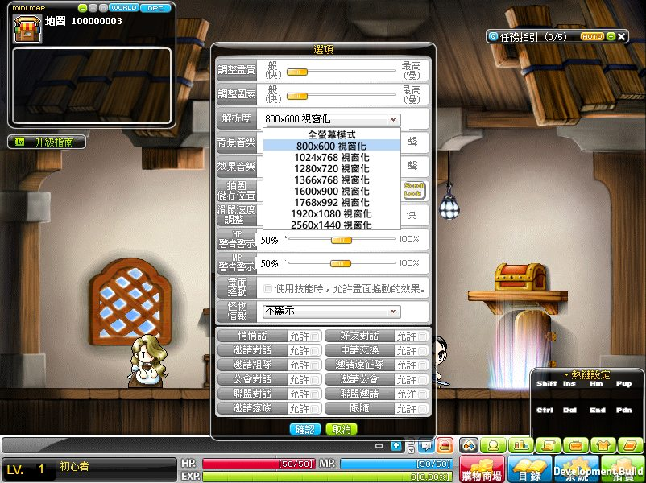
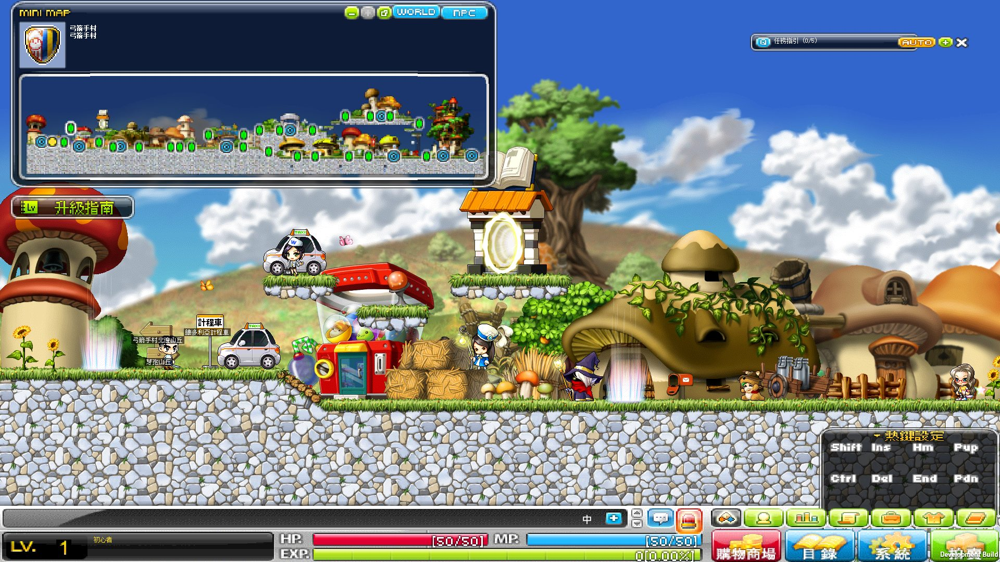
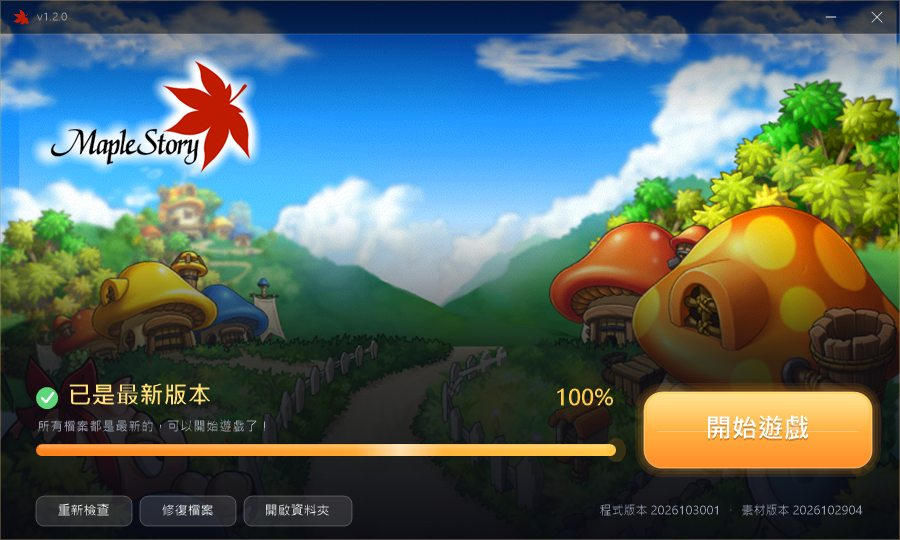

伺服器資訊
以下數值直接取自伺服器目前的設定。
伺服器特色

原汁原味的 v149 世界
使用台版 v149 原版地圖與 NPC，弓箭手村、自由市場、計程車一應俱全。任務指引會顯示目前的打怪進度，跟著做就能升級。
- NPC 對話與傳送已逐一檢查修正
- 3 轉、4 轉改回任務制，跟著劇情轉職
- 初心者技能、雙擊施放技能都能正常使用

拍賣場
可以把道具放上拍賣場用楓葉點數直購或競標。販售、購買、競標、我的拍賣分頁清楚，還有使用方法說明。
- 直購與競標兩種模式
- 拍賣倉庫自動保管成交物品

方便的商店
商店賣出時會直接顯示「N 個、每個 X 楓幣」，一次賣多少、拿多少錢一看就懂，不怕手滑賣錯。
- 全部道具皆可賣給商店
- 自動配點，也能手動調整

購物商城與時裝
每週登入就送 500 樂豆點，可以在購物商城買時裝、耳環、寵物。時裝欄與一般裝備分開穿，外觀想怎麼搭都行。
- 時裝欄獨立分頁
- 商城試穿預覽

大螢幕也好玩
支援 800x600 到 2560x1440 多種視窗大小，也能 Alt+Enter 切成全螢幕。地圖比畫面小時會自動延展，不會出現黑邊。
- 八種視窗大小＋全螢幕模式
- 視窗會自動縮到螢幕放得下的大小
12 大職業全部開放
建立角色時所有職業都能選。
- 冒險家
- 皇家騎士團
- 狂狼勇士
- 龍魔導士
- 精靈遊俠
- 惡魔
- 幻影俠盜
- 末日反抗軍
- 影武者
- 重砲指揮官
- 米哈逸
- 蒼龍俠客
遊戲畫面
點圖片可放大。


開始遊戲
取得客戶端
客戶端由管理員提供，請透過下方聯絡方式索取。
Windows PCAndroid
安裝並開啟
PC：解壓縮後執行「楓之谷啟動器」。
Android：安裝 APK 後開啟。
自動更新
啟動後會自動下載最新檔案，顯示「已是最新版本」就能進入遊戲。之後的更新也是自動的，不用重新下載整包。
登入
第一次輸入帳號密碼登入時，會自動幫你建立帳號，請記好自己的密碼。
索取客戶端／聯絡管理員
聯絡方式即將公布，敬請期待！
常見問題
需要先註冊帳號嗎？
不用。第一次登入時輸入想要的帳號和密碼，系統會自動建立。
更新要重新下載整個遊戲嗎？
不用。PC 啟動器和 Android 版都會自動下載有變動的檔案。
登入時說版本太舊？
代表需要更新。PC 請用啟動器開啟遊戲；Android 若提示要更新 App，請向管理員索取新版 APK。
可以用大螢幕玩嗎？
可以。在遊戲「選項」的解析度選單選擇視窗大小，或按 Alt+Enter 切換全螢幕。
樂豆點怎麼來？
每週登入會自動贈送 500 樂豆點，可以在購物商城使用。